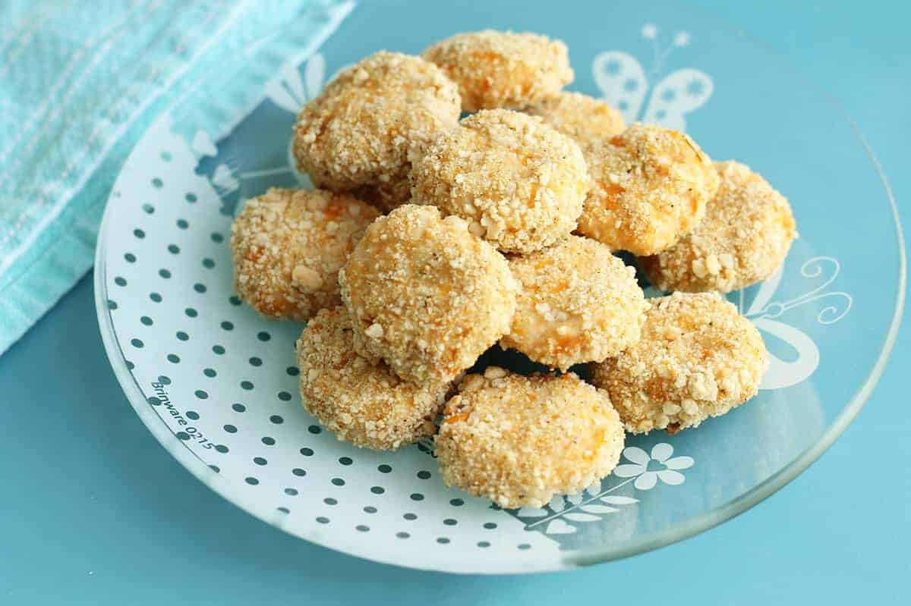

Chicken Nuggets with Sweet Potato

Healthy and delicious Chicken Nuggets even the picky eaters will love
Ingredients
- 500g Lean chicken mince or ground chicken breast
- 2 Sweet Potatos(Butternut squash may be used in place if preferred)
- 1 cup Bread Crumbs
- Salt (Optional)
- Onion Powder (Optional flavour additon)
Step-by-step instructions
- Peel, cut and cook sweet potatos ahead of time.
- Mash the cooled potato
- Add the potato to a bowl with the minced chicken and salt. Add onion powder if you’d like
- Form into small balls, flatten slightly, and coat in breadcrumbs.
- Place onto a parchment-lined baking sheet and bake for 45-60 minutes at 200ºc